yolo原理
YOLO学习笔记¶
1.yolo v1¶
论文来源：2016CVPR You Only Look Once:Unified,Real-Time Object Detection 参考网站
1.1 基本思想：¶
(1)将一幅图像分成 S \times S 个网格(grid cell)，如果某个 object 的中心落在网格之中，则这个网格就负责预测这个 object 。
(2)每个网格预测 B 个 bounding box ，每个 bouding box 除了要预测位置 (x,y,w,h) 外，还要附带一个 confidence 值（ yolo 独有， Faster-RCNN 和 SSD 没有），同时还要预测 C 个类别的分数。
eg.Pascal VOC:Our Fianl Prediction is a 7 * 7 * 30 tensor. S = 7 ( grid cell 为 7 * 7 ) B = 2 ( 2 个 bounding box ,每个包含 x , y , w , h , confidence ) C = 20 ( classes_num = 20 ) 7 * 7 * (2 * 5 + 20) -> 7 * 7 * 30
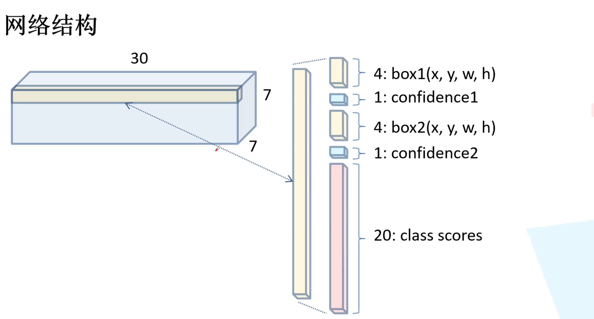
每个 bouding box 的坐标是相对值，取值在[0,1] x,y : the center of the box relative to the bounds of the grid cell w,h : the width and height relative to the whole image confidence : Pr(Object) \times IOU_{pred}^{truth} ,前者为 0 或 1 ，后者为预测框和实际框的交并比
(3)网络结构： ImageNet
yolov1 的网络结构并不复杂，如下图所示
其中 s 为步距 stride 的简写，未写的默认为 1
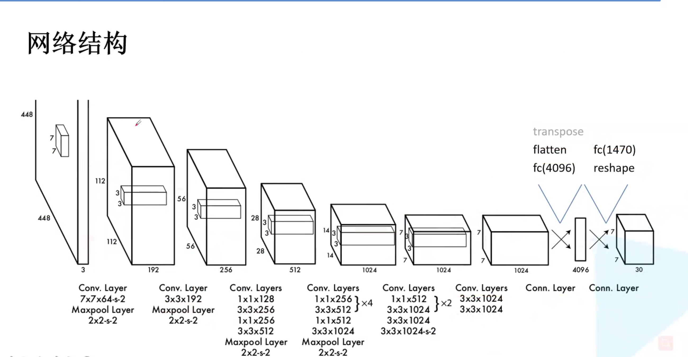
最后两层： 4096 -> 1470 ->( reshape 处理) 7 * 7 * 30 （即上述的 cell 结构）
(4) 激活函数： leaky ReLU
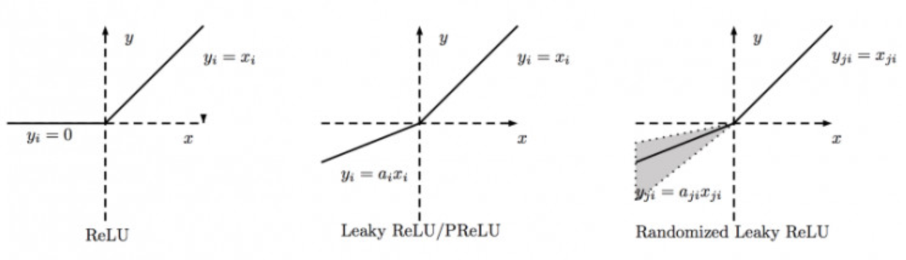
PReLu 的 a_i 是根据数据变化的 LeakyReLu 的 a_i 是固定的 RReLu 的 a_{ji} 是一个给定范围随机抽取的值
1.2 损失函数¶
yolov1 的损失函数由三部分组成,所用方法为误差平方和 (1) bouding box loss (2) confidence loss (3) classes loss
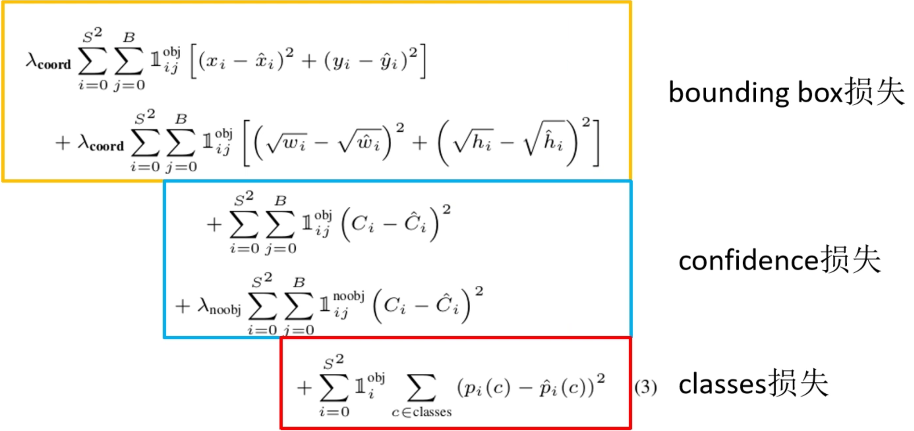
tips:
(1) bouding box 损失中的宽高损失计算需要开根号，目的是防止不同尺寸的目标框偏移相同距离时的 loss 值一样（偏移相同的距离，对于大目标而言， IoU 较大，则loss值应该相对较低；对于小目标而言， IoU 较小，则loss值应该相对较高，故采用开根可以起到如此效果）
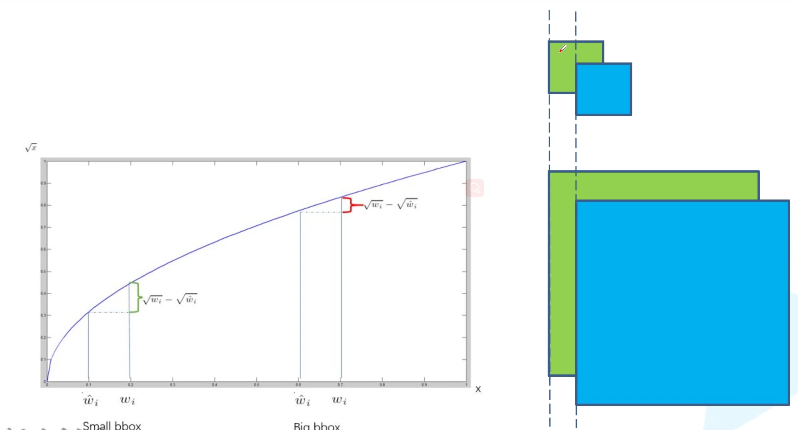
(2) confidence 损失计算中分为正样本和负样本的计算，根据正负样本真实值 {C_i} 取 1 或 0
(3) \lambda 为损失函数的权重 loss weight * 8 维的 localization error 和 20 维的 classes error 相比，前者的权重需要大些才合理，即对坐标赋予更大的 loss weight * 如果一个网格中没有 object（一幅图中这种网格很多），那么就会将这些网格中的 box 的 confidence push到0，相比于较少的有 object 的网格，这种做法是 overpowering 的，这会导致网络不稳定甚至发散。对没有 object 的 box 的 confidence loss，赋予小的 loss weight * 有 object 的 box 的 confidence loss 和类别的 loss 的loss weight正常取 1
(4) 只有当某个网格中有 object 的时候才对 classification error 进行惩罚;只有当某个 box predictor 对某个 ground truth box 负责的时候，才会对 box 的 coordinate error 进行惩罚，而对哪个 ground truth box 负责就看其预测值和 ground truth box 的 IoU 是不是在那个 cell 的所有 box 中最大(NMS)。
1.3 局限性¶
(1) 群体性目标难预测，例如一群飞鸟，不适合密集性对象（一个 grid 一个类）
(2) 当目标出现新的尺寸或配置时，预测性能较差
(3) 定位不准确是主要问题（缺少 anchor 先验框 ）
2.yolo v2(YOLO9000)¶
论文来源：2017CVPR YOLO9000:Better,Faster,Stronger 参考网站
2.1 改进¶
(1) Batch Normalization : 在每个卷积层后都增加了BN层
- 更好收敛（每层输入数据分布稳定在梯度非饱和区，加快学习速度，防止梯度消失）
- 减少其他形式的正则化处理
- 可以替代 dropout 操作（防止过拟合）
(2) High Resolution Classifier : 224 * 224 -> 448 * 448
(3) Convolutinal With Anchor Boxes ：小幅度降低了 mAP ，但大幅提升了召回率（查全率） 预测偏移量比预测坐标值(yolov1)更能简化工作
(4) Dimention Cluster : 基于训练集采用 k-means 聚类的方法得到 anchor(priors)
(5) Direct Location prediction : 使每个 anchor(prior) 去预测目标中心落在某个 grid cell 区域内的目标(防止加上预测偏移量会导致建议框出现在图片任意一个地方)，网络更易于学习和更加稳定

- b_x,b_y,b_w,b_h 是预测框的中心和宽高， Pr(object)*IOU(b,object) 是预测框的置信度，这里对预测参数 t_o 进行 \sigma 变换后作为置信度的值
- c_x,c_y 是当前网格左上角到图像左上角的距离，要先对一个网格大小归一化
- p_w,p_h 是先验框的宽和高
- \sigma 是 sigmoid 函数
- t_x,t_y,t_w,t_h,t_o 是要学习的参数，分别用于预测边框的中心宽高和置信度
(6) Fine-Grained Features : 对于小目标的预测，同时融合了高层和低层的特征层，增加了 passthrough layer 的处理
(7) Multi-Scale Training ：每迭代 10 个 batch ，就改变输入尺寸的大小，尺寸均为 32 的整数倍，范围在{320,352，……,608}
2.2 网络结构¶

- 图中的每个 convolutional 都是由
卷积层(Conv2D)、 BN 层、激活函数(LeakyReLU)组成，最后一层只有一个单卷积层作为预测器 - Size 中未标步距的默认为 1
- backbone 中的 Darknet19 (由 19 个卷积层) 移除了最后一层卷积层及其之后的层，后面添加了 3 个
3 * 3 的 1024 核卷积层 - 最后预测的 125 个参数即为 5 个 boundingbox ，其中包括
x , y , w , h , confidence,以及20 个类别 - PassThrough Layer 作为高低层的特征层融合途径（防止小目标在高层没被提取出来），其中 26 * 26 * 64 变成 13 * 13 * 256 的原理如下图所示

3.yolo v3¶
论文来源： 2018CVPR YOLOv3: An Incremental Improvement
3.1 backbone 结构( darknet53 )¶
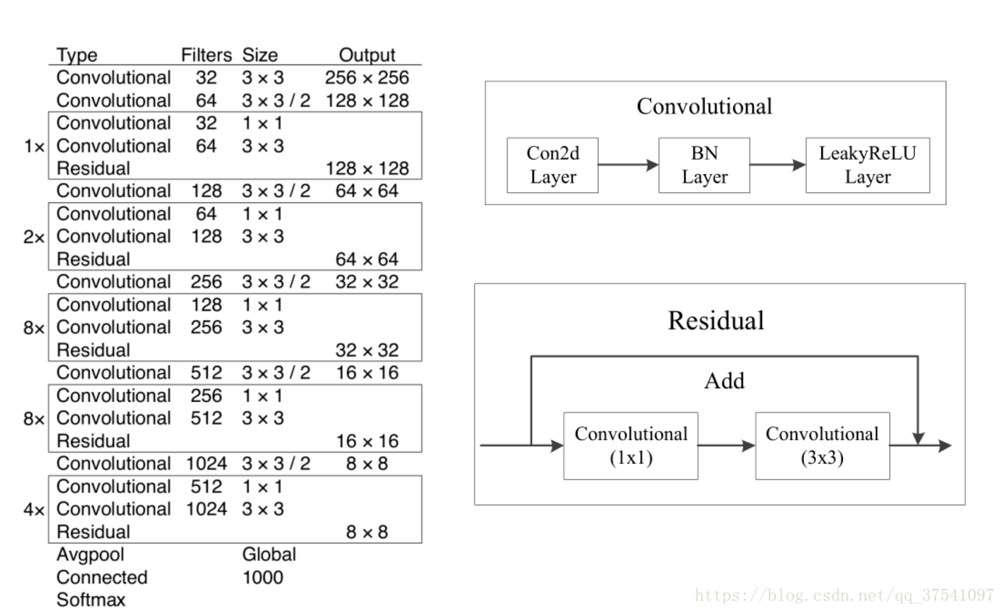
- 53个卷积层（包括最后的 Connnected ），其中 convolutianl 均由
卷积层， BN 层，激活函数(LeakyRelu)组成，残差结构均为主分支和捷径分支的相加结构 - 没有 maxpolling 层，下采样均由卷积层处理( size 为 2 )
3.2 模型结构¶

- yolov3 在 3 个特征层进行预测，每个特征层采用 3 种尺度的 bounding box priors (即 anchor ,同样基于 k-means 聚类),参数如下图所示：

每个特征层的预测参数个数为 N \times N \times [3 * (4 + 1 + 80)] ,其中 80 为种类数（ CoCo 数据集）
- Up Sampling 为上采样层，高和宽会扩大为原来的 2 倍，扩大后便可与原来低层的输出进行 concatenate ，即进行深度上的拼接（ 13 -> 26 -> 52 ）
- 特征图 1 尺寸为 13 * 13,用来预测相对较大的目标；特征图 2 尺寸为 26 * 26,用来预测大小中等的目标；特征图 3 尺寸为 52 * 52，用来预测相对较小的目标
3.3 目标边界框的预测与正负样本匹配¶
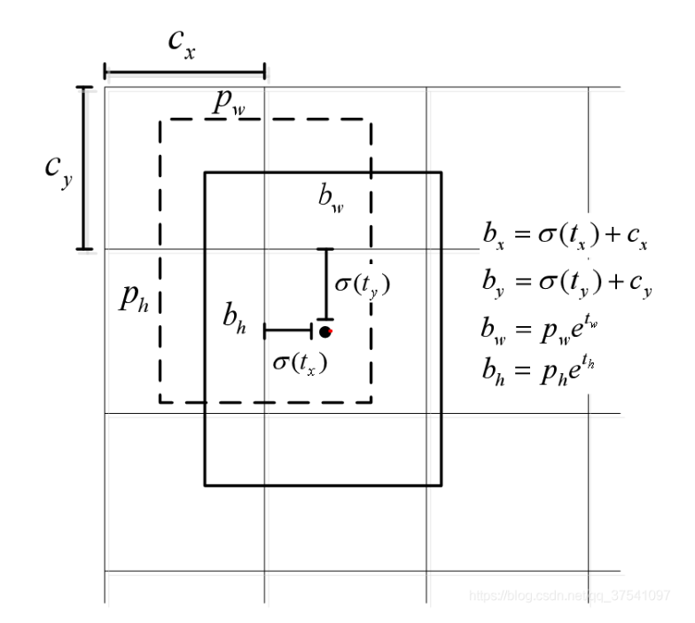
\sigma 函数即为 sigmoid 函数，将预测的增量限制在一定范围使 anchor 不会超出对应的 grid cell
与 ground truth 的 重合度最大的 bounding box 定为正样本，重合度不是最大但大于阈值的则忽视（不作为样本，即不计算目标框损失 loss for coordinate prediction 和类别损失 loss for class prediction ,仅计算置信度 objectness ），其余的则为负样本
3.4 损失函数¶
YOLOv3 的损失函数主要分为 3 个部分：目标置信度损失 L_{conf}(o,c) ,目标分类损失 L_{cla}(O,C) 和目标定位偏移量损失 L_{loc}(l,g) , \lambda_1,\lambda_2,\lambda_3 为平衡系数 L(O,o,C,c,l,g) = \lambda_1 L_{conf}(o,c) + \lambda_2 L_{cla}(O,C) + \lambda_3 L_{loc}(l,g)
3.4.1 目标置信度损失（二值交叉熵）¶
L_{conf}(o,c)=- \frac{\sum_i(o_i ln(\hat{c_i})+(1-o_i) ln(1-\hat{c_i}))}{N} \hat{c_i}=sigmoid(c_i)
o_i \in [0,1],表示目标边界与真实边界(ground truth)的 IoU ,c 为预测值， \hat{c_i} 为 c 通过 sigmoid 函数得到的预测置信度， N 为正负样本个数
3.4.2 目标类别损失（二值交叉熵）¶
L_{cla}(O,C) = - \frac{ \sum_{i \in pos} \sum_{j \in cla} (O_{ij} ln(\hat{C_{ij}}) + (1-O_{ij}) ln(1- \hat{C_{ij}}))}{N_{pos}} \hat{C_{ij}}=sigmoid(C_{ij})
O_{ij} \in {\{0,1\}}，表示目标边界框 i 中是否存在第 j 类目标，C_{ij} 为目标值,\hat {C_{ij}} 为 C_{ij} 通过 sigmoid 函数得到的目标概率， N_{pos} 为正样本个数
3.4.3 目标定位损失¶
L_{loc}(l,g) = \frac{ \sum_{i \in pos} \sum_{m \in \{x,y,w,h\}} (\hat{l_i^m}-\hat{g_i^m})^2}{N_{pos}} \hat{l_i^x}=Sigmoid(t_x),\hat{l_i^y}=Sigmoid(t_y) \hat{l_i^w}=t_w,\hat{l_i^h}=t_h \hat{g_i^x}=g_i^x-c_i^x,\hat{g_i^y}=g_i^y-c_i^y \hat{g_i^w}=ln(g_i^w/p_i^w),\hat{g_i^h}=ln(g_i^h/p_i^h)
3.5 yolov3 SPP¶
yolov3-SPP-ultralytics 中有许多提升效能的 tricks
3.5.1 Mosaic 图像增强¶
将若干个原图像进行拼接形成新图像，增强后一张图像的信息就包含原本多张图像的信息，有助于
（1） 增加数据的多样性 （2） 增加目标个数 （3） BN 能一次性统计多张图片的参数
3.5.2 SPP模块¶

相比于原网络增加了SPP 模块（在原网络中的 convolutianal set 插入），包含 3 路最大池化层，将 4 路特征进行 concatenate 拼接(512->2048)
3.5.3 损失函数的进化：GIoU Loss¶
(1) l2 :原 yolov3 采用的目标定位损失为 l2 损失
L_{loc}(l,g) = \frac{ \sum_{i \in pos} \sum_{m \in \{x,y,w,h\}} (\hat{l_i^m}-\hat{g_i^m})^2}{N_{pos}} \hat{l_i^x}=Sigmoid(t_x),\hat{l_i^y}=Sigmoid(t_y) \hat{l_i^w}=t_w,\hat{l_i^h}=t_h \hat{g_i^x}=g_i^x-c_i^x,\hat{g_i^y}=g_i^y-c_i^y \hat{g_i^w}=ln(g_i^w/p_i^w),\hat{g_i^h}=ln(g_i^h/p_i^h)
会出现损失相同但 IoU 差距明显的的情况
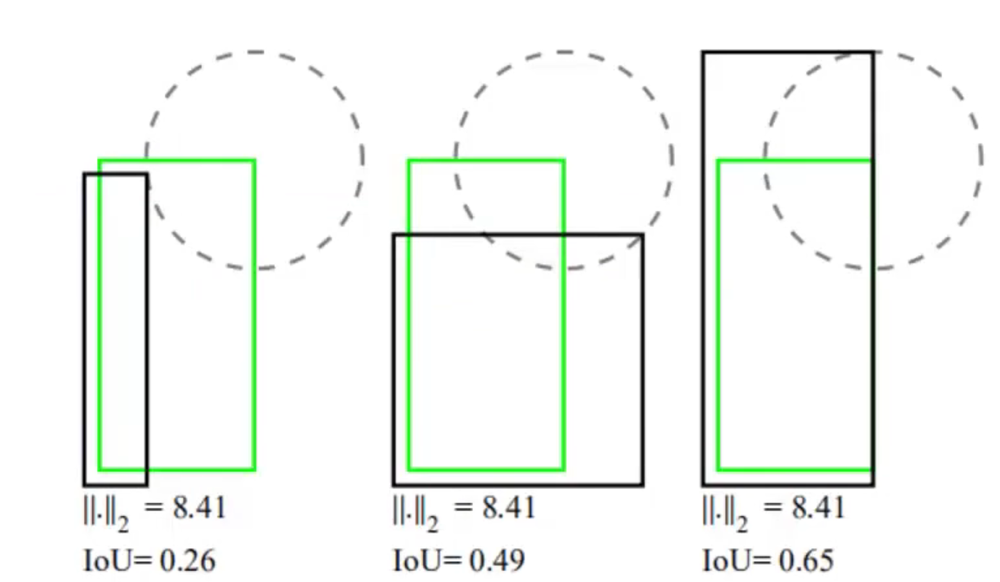
(2) IoU Loss = -ln IoU 或者 IoU Loss = 1 - IoU
能够更好地反应重合程度，具有尺度不变性，但当不相交时 loss 为 0 ，不符合实际情况
(3) GIoU Loss = 1 - GIoU
GIoU = IoU - \frac{A^c-U}{A^c} -1 \leq GIoU \leq 1 0 \leq GIoU Loss \leq 2
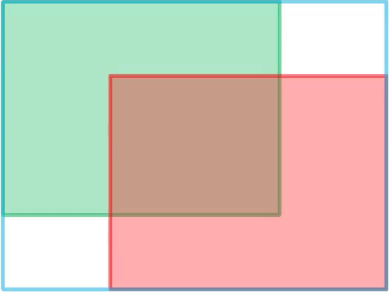
其中，绿色矩形框为 ground truth ,红色矩形框预测框，蓝色矩形框为同时包含它们的最小矩形框， A^c 则为蓝色矩形框面积。当其重合时， GIoU = 1 ；当其相距无穷远时， GIoU = -1
(4) DIoU Loss = 1 - DIoU DIoU = IoU -\frac{\rho^2(b,b^{gt})}{c^2} = IoU - \frac{d^2}{c^2} $-1 \leq DIoU \leq 1 $ 0 \leq DIoU Loss \leq 2

其中，\rho^2(b,b^{gt}) 即为预测框和 grounding box 中心点的欧氏距离 d , c 则为包含这两个框的最小矩形框的对角线长度。DIoU损失能够直接最小化两个 boxes 之间的距离，因此收敛速度更快
(5) CIoU Loss = 1 - CIoU CIoU = IoU - (\frac{\rho^2(b,b^{gt})}{c^2}+\alpha \upsilon) \upsilon = \frac{4}{\pi^2}(\arctan \frac{w^{gt}}{h^{gt}}-\arctan \frac{w}{h})^2 \alpha = \frac{\upsilon}{(1-IoU)+\upsilon}
一个优秀的回归定位损失应该考虑到 3 种几何参数： 重叠面积 中心点距离 长宽比
3.5.4 应对正负样本数量不平衡： Focal Loss¶
(1) 对于普通的交叉熵损失（二分类）CE (cross entropy) 而言：
或
CE(p,y)=CE(p_t)=-ln(p_t)
(2) 引入平衡因子(Balanced Cross Entropy)
CE(p_t)=-\alpha_t ln(p_t)
\alpha为用于平衡正负样本的超参数
(3) 加入可以区分难易样本的参数
FL(p_t)=-(1-p_t)^\gamma log(p_t)
(1-p_t)^\gamma 能够降低易分样本的损失贡献，使得模型专注训练复杂样本
(4) 结合超参数
FL(p_t) = -\alpha_t(1-p_t)^\gamma ln(p_t)
即

由数据可知，对于简单样本 Focal Loss 相比于 CE 降低了简单样本的损失贡献率，使得模型更好地训练难学习样本
FocalLoss 易受噪声干扰，在使用过程中需要进行调参，同时也要保证数据集的标注精准度，否则也会使效果下降
4.yolov4¶
4.1 网络结构¶
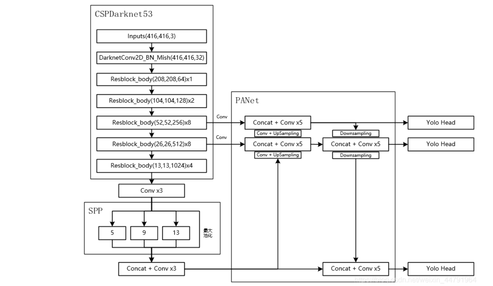
- 基础仍是 yolov3 网络，backbone 为 CSPDarknet53 ，Resblock 为残差结构
- SPP 通过 4 个不同尺度的最大池化对输入的特征层进行池化后拼接，大小分别为
13 * 139 * 95 * 51 * 1 - PA Net 与 yolov3 的增强网络类似（特征金字塔结构： FPN + PAN），通过卷积和上采样(FPN:13->26->52)进行对应层的拼接，之后再进行卷积和下采样(PAN：52->26->13)进行对应层拼接
不断上下采样通道堆叠得到更好的特征，对 3 个有效特征层进行特征的反复提取 - YOLO Head 和 yolov3 的三个预测层相同(N * N * 3 * (5 + 70))
4.2 backbone 网络(CSPDarknet53)¶
相比于 yolov3 ,其改进的地方有：
(1) 激活函数： LeakyReLU -> Mish
convolutional 结构变为 darknetConv2D BN Mish
Mish 函数： Mish = x \times tanh(ln(1+e^x))
其图像为：
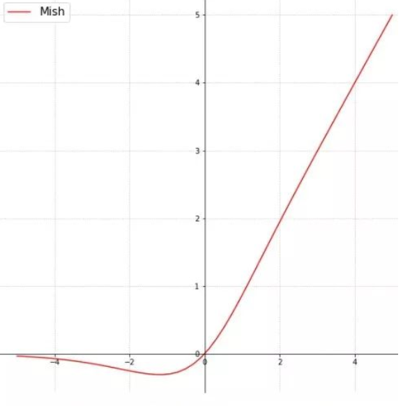
(2) 残差结构使用了 CSPnet 结构

CSP net 将原来残差快的堆叠进行了一个拆分，主干部分不变，另一个部分经过少量处理连接到最后，即多了一条绕过了很多残差结构的大残差边
4.3 tricks¶
(1) 在预测结构中，yolov4 的方法是： * 取出每一类得分大于阈值的目标框和得分 * 利用框的位置和得分进行非极大值抑制
(2) Mosaic 数据增强
同 yolov3_SPP 处理，一次对 4 张图片的信息进行组合
(3) Label Smoothing 平滑
new_onehot_labels = onehot_labels * (1 - label_smoothing) + label_smoothing / num_classes
标签(0,1) -> 平滑(0.005,0.995)
(4) 损失函数引入 CIoU ，同 yolov3_SPP
(5) 学习率余弦退火衰减

5.yolov5¶
5.1 网络结构¶

5.2 Focus 结构¶

4 * 4 * 3 -> 2 * 2 * 12
5.3 两种 CSP 结构¶